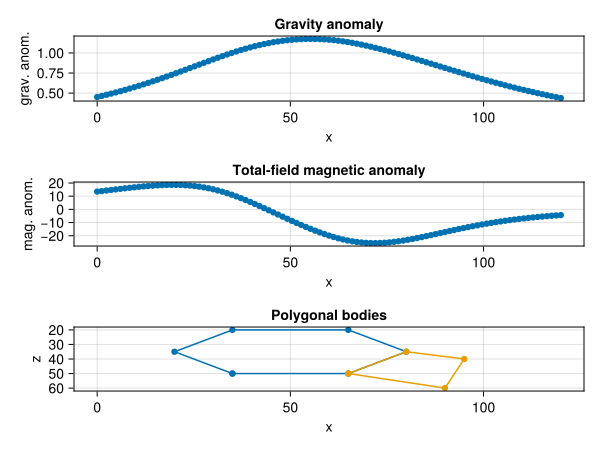

MagGravPoly
- MagGravPoly
- GeoPoly
User Guide
MagGravPoly is a Julia package to perform magnetic and gravity anomaly calculations using a 2D or 2.75D parameterization in terms of polygons with uniform arbitrary magnetizations and density contrasts. It provides functions to 1) solve the forward problem, 2) calculate the gradient of a given misfit function and 3) create/manage polygonal structures through the internal sub-package GeoPoly. Such functions can be used to solve inverse problems both in the deterministic and probabilistic approach. In particular, this package provides some functions to solve inverse problems using the Hamiltonian Monte Carlo (HMC) method, as part of the GinvLab project (see the InverseAlgos.jl package). Gradients are calculated using the technique of automatic differentiation. With this package it is also possible to perform joint magnetic and gravity forward and gradient calculations and hence solve joint inverse problems, see the tutorials below.
The forward problem formulations for the magnetic case implemented in this package are the following:
- 2D case: Talwani & Heirtzler (1962, 1964), Won & Bevis (1987) and revised Kravchinsky, Hnatyshin, Lysak, & Alemie (2019);
- 2.75D case: revised Rasmussen & Pedersen (1979) and Campbell (1983).
The forward problem formulations for the gravity case implemented in this package are the following:
2D case: Talwani, Worzel, & Landisman (1959), with background theory derived from the paper of Hubbert (1948);
2.75D case: Rasmussen & Pedersen (1979).
If you use this code for research or else, please cite the related papers:
Ghirotto, Zunino, Armadillo, & Mosegaard (2021). Magnetic Anomalies Caused by 2D Polygonal Structures with Uniform Arbitrary Polarization: new insights from analytical/numerical comparison among available algorithm formulations. Geophysical Research Letters, 48(7), e2020GL091732, https://doi.org/10.1029/2020GL091732.
Zunino, Ghirotto, Armadillo, & Fichtner (2022). Hamiltonian Monte Carlo probabilistic joint inversion of 2D (2.75D) gravity and magnetic data. Geophysical Research Letters, 49, e2022GL099789. https://doi.org/10.1029/2022GL099789.
Regarding solving the inverse problem with the HMC method, please see the following paper and check out the package InverseAlgos:
- Zunino, Gebraad, Ghirotto, & Fichtner (2023). HMCLab: a framework for solving diverse geophysical inverse problems using the Hamiltonian Monte Carlo method. Geophysical Journal International, 235(3), 2979-2991. https://doi.org/10.1093/gji/ggad403.
In addition, a tutorial about the use of forward formulations and the basic tuning strategies for HMC inversion is presented in detail in the below section.
Installation
To install the package first enter into the package manager mode in Julia by typing "]" at the REPL prompt and add the "JuliaGeoph" registry as
(@v1.9) pkg> registry add https://github.com/GinvLab/GinvLabRegistryThen add the package by simply issuing
(@v1.9) pkg> add MagGravPolyThe package will be automatically downloaded from the web and installed.
Theoretical Background
Forward calculation
For a theoretical explanation, let us consider a three-dimensional non-magnetic and zero-density space in which a body infinitely extended in the $y$ direction is immersed.
The common aim of all formulations is the calculation of the total-field magnetic intensity response and vertical attraction of this body upon an observation point $(x_0,z_0)$ located along a profile aligned to the $x$ direction (the positive $z$ axis is assumed pointing downward).
The starting assumption is that our body can be considered as discretized by an infinite number of elementary volumes with uniform magnetizazion and density contrast and infinitesimal dimensions $dx$, $dy$, $dz$.
Within this assumption, the magnetic and gravity fields associated to the body can be mathematically expressed in terms of a line integral around its periphery, represented in two dimensions as its polygonal cross-section (in red). 
Inverse calculations
See the related papers and examples for inverse calculations using the HMC strategy.
Tutorial for magnetic calculations
First load the module,
using MagGravPoly.MG2Dthen define an array containing the location of the observation points, where the first column represents the $x$ position and the second the $z$ position. Remark: $z$ points downward! So the observations have a negative $z$ in this case.
# number of observations
N=101
xzobs = [LinRange(0.0,120.0,N) -1.0*ones(N)]In order to describe the polygonal bodies, two objects need to be specifies: 1) an array containing all the positions of the vertices (first column represents the $x$ position and the second the $z$ position) and 2) a mapping relating each polygonal body to its vertices. The position of vertices must be specifyied in a counterclockwise order.
# vertices of the poligonal bodies
vertices = [35.0 50.0;
65.0 50.0;
80.0 35.0;
65.0 20.0;
35.0 20.0;
20.0 35.0;
90.0 60.0;
95.0 40.0]
# indices of vertices for the first polygon
ind1 = collect(1:6)
# indices of vertices for the second polygon
ind2 = [2,7,8,3]
# define the two bodies in term of indices
bodyindices = [ind1,ind2]Now, we specify the magnetic properties for each of the polygonal bodies and the angle of the reference system with the north axis:
# induced magnetization
Jind = MagnetizVector(mod=[4.9,3.5],Ideg=[0.0,0.0],Ddeg=[5.0,5.0])
# remanent magnetization
Jrem = MagnetizVector(mod=[3.1,2.5],Ideg=[45.0,30.0],Ddeg=[0.0,10.0])
# angle with the North axis
northxax = 90.0Finally, construct the poligonal body object by instantiating a MagPolygBodies2D structure. Here we can determine the type of forward calculation, i.e., 2D, 2.5D or 2.75D by specifying the variable ylatext. There are three cases:
- if
ylatext=nothingthen the polygonal bodies are considered to be extending laterally to infinity, hence a pure 2D forward calculation - if
ylatextis a single real number, then the forward computation is 2.5D, i.e., the polygonal bodies extend laterally on both sides by an amount specified by the value ofylatext - if
ylatextis a two-element vector, then the forward computation is 2.75D, i.e., the polygonal bodies extend laterally fromylatext[1]toylatex[2](with the conditionylatex[2]>ylatex[1]).
Here we choose to run a 2.75D forward computation:
pbody = MagPolygBodies2D(bodyindices,vertices,Jind,Jrem,ylatext=[50.0,90.0])At this point the magnetic field can be computed:
tmag = tmagpolybodies2D(xzobs,northxax,pbody)101-element Vector{Float64}:
10.296809749528707
11.557811908525963
12.868050991439402
14.22720252265412
15.634723162565262
17.089837174178953
18.591523737538612
20.138505340589656
21.729237481428008
23.361899918828186
⋮
25.52347752242912
24.28969830984706
23.08772797914915
21.91806205064613
20.78107553248585
19.677029824367516
18.606079648882357
17.568279969353398
16.56359285643376The output vector is the magnetic anomaly at each of the observation points specified above.
Now we can plot the results (e.g., using CairoMakie):
using CairoMakie
fig = Figure()
ax1 = Axis(fig[1,1],title="Magnetic anomaly",xlabel="x",ylabel="mag. anom.")
scatter!(ax1,xzobs[:,1],tmag)
ax2 = Axis(fig[2,1],title="Polygonal bodies",xlabel="x",ylabel="z")
x1 = [pbody.geom.bo[1].ver1[:,1]...,pbody.geom.bo[1].ver2[end,1]]
y1 = [pbody.geom.bo[1].ver1[:,2]...,pbody.geom.bo[1].ver2[end,2]]
scatterlines!(ax2,x1,y1)
x2 = [pbody.geom.bo[2].ver1[:,1]...,pbody.geom.bo[2].ver2[end,1]]
y2 = [pbody.geom.bo[2].ver1[:,2]...,pbody.geom.bo[2].ver2[end,2]]
scatterlines!(ax2,x2,y2)
ax2.yreversed=true
linkxaxes!(ax1,ax2)CairoMakie.Screen{SVG}
Tutorial for gravity calculations
First load the module,
using MagGravPoly.MG2Dthen define an array containing the location of the observation points, where the first column represents the $x$ position and the second the $z$ position. Remark: $z$ points downward! So the observations have a negative $z$ in this case.
# number of observations
N=101
xzobs = [LinRange(0.0,120.0,N) -1.0*ones(N)]In order to describe the polygonal bodies, two objects need to be specifies: 1) an array containing all the positions of the vertices (first column represents the $x$ position and the second the $z$ position) and 2) a mapping relating each polygonal body to its vertices. The position of vertices must be specifyied in a counterclockwise order.
# vertices of the poligonal bodies
vertices = [35.0 50.0;
65.0 50.0;
80.0 35.0;
65.0 20.0;
35.0 20.0;
20.0 35.0;
90.0 60.0;
95.0 40.0]
# indices of vertices for the first polygon
ind1 = collect(1:6)
# indices of vertices for the second polygon
ind2 = [2,7,8,3]
# define the two bodies in term of indices
bodyindices = [ind1,ind2]Now, we specify the density for each of the polygonal bodies
# two bodies in this case
rho = [2000.0,3000.0]Finally, construct the poligonal body object by instantiating a GravPolygBodies2D structure. Here we can determine the type of forward calculation, i.e., 2D, 2.5D or 2.75D by specifying the variable ylatext. There are three cases:
- if
ylatext=nothingthen the polygonal bodies are considered to be extending laterally to infinity, hence a pure 2D forward calculation - if
ylatextis a single real number, then the forward computation is 2.5D, i.e., the polygonal bodies extend laterally on both sides by an amount specified by the value ofylatext - if
ylatextis a two-element vector, then the forward computation is 2.75D, i.e., the polygonal bodies extend laterally fromylatext[1]toylatex[2](with the conditionylatex[2]>ylatex[1]).
Here we choose to run a 2.75D forward computation:
pbody = GravPolygBodies2D(bodyindices,vertices,rho,ylatext=[50.0,90.0])At this point the gravity field can be computed:
tgrav = tgravpolybodies2D(xzobs,pbody)101-element Vector{Float64}:
0.043099866346709335
0.043998790656084405
0.044907859709626456
0.04582641973712609
0.04675375980023228
0.04768911098561322
0.04863164588041108
0.0495804783552574
0.05053466367864151
0.05149319898413085
⋮
0.05120452930761636
0.05028175203555816
0.04936331720132698
0.048450080798166435
0.047542850268447345
0.04664238439962175
0.045749393448459116
0.04486453947977988
0.043988436904790734The output vector is the gravity anomaly at each of the observation points specified above.
Now we can plot the results (e.g., using CairoMakie):
using CairoMakie
fig = Figure()
ax1 = Axis(fig[1,1],title="Gravity anomaly",xlabel="x",ylabel="grav. anom.")
scatter!(ax1,xzobs[:,1],tgrav)
ax2 = Axis(fig[2,1],title="Polygonal bodies",xlabel="x",ylabel="z")
x1 = [pbody.geom.bo[1].ver1[:,1]...,pbody.geom.bo[1].ver2[end,1]]
y1 = [pbody.geom.bo[1].ver1[:,2]...,pbody.geom.bo[1].ver2[end,2]]
scatterlines!(ax2,x1,y1)
x2 = [pbody.geom.bo[2].ver1[:,1]...,pbody.geom.bo[2].ver2[end,1]]
y2 = [pbody.geom.bo[2].ver1[:,2]...,pbody.geom.bo[2].ver2[end,2]]
scatterlines!(ax2,x2,y2)
ax2.yreversed=true
linkxaxes!(ax1,ax2)CairoMakie.Screen{SVG}
Tutorial for joint mag and grav
First load the modules,
using MagGravPoly.MG2Dthen define 1) the angle between the Magnetic Field's North and the model profile, 2) an array containing the location of the observation points along it, where the first column represents the $x$ position and the second the $z$ position. Remark: $z$ points downward! So the observations have a negative $z$ in this case.
# angle with the North axis
northxax = 90.0
# number of observations
N=101
xzobs_mag = [LinRange(0.0,120.0,N) -1.0*ones(N)]
xzobs_grav = copy(xzobs_mag)In order to describe the polygonal bodies, two objects need to be specifies: 1) an array containing all the positions of the vertices (first column represents the $x$ position and the second the $z$ position) and 2) a mapping relating each polygonal body to its vertices. The position of vertices must be specifyied in a counterclockwise order.
# vertices of the poligonal bodies
vertices = [35.0 50.0;
65.0 50.0;
80.0 35.0;
65.0 20.0;
35.0 20.0;
20.0 35.0;
90.0 60.0;
95.0 40.0]
# indices of vertices for the first polygon
ind1 = collect(1:6)
# indices of vertices for the second polygon
ind2 = [2,7,8,3]
# define the two bodies in term of indices
bodyindices = [ind1,ind2]Now, we specify the density and magnetization for each of the polygonal bodies
# two bodies in this case
# densities
rho = [2000.0,3000.0]
# induced magnetizations
Jind = MagnetizVector(mod=[4.9,1.0],Ideg=[0.0,0.0],Ddeg=[5.0,5.0])
# remanent magnetizations
Jrem = MagnetizVector(mod=[3.1,1.5],Ideg=[45.0,-45.0],Ddeg=[0.0,0.0])Finally, construct the poligonal body object by instantiating a JointPolygBodies2D structure. Here we can determine the type of forward calculation, i.e., 2D, 2.5D or 2.75D by specifying the variable ylatext. There are three cases:
- if
ylatext=nothingthen the polygonal bodies are considered to be extending laterally to infinity, hence a pure 2D forward calculation - if
ylatextis a single real number, then the forward computation is 2.5D, i.e., the polygonal bodies extend laterally on both sides by an amount specified by the value ofylatext - if
ylatextis a two-element vector, then the forward computation is 2.75D, i.e., the polygonal bodies extend laterally fromylatext[1]toylatex[2](with the conditionylatex[2]>ylatex[1]).
Here we choose to run a 2.75D forward computation:
pbody = JointPolygBodies2D(bodyindices,vertices,Jind,Jrem,rho,ylatext=[50.0,90.0])At this point the gravity and magnetic fields can be computed:
# compute the gravity anomaly and total field magnetic anomaly
tgrav,tmag = tjointpolybodies2D(xzobs_grav,xzobs_mag,northxax,pbody)The output vectors are the gravity and magnetic anomalies at each of the observation points specified above.
Alternatively, in the 2D case we could choose among other forward formulations implemented, specified as strings. Now we choose as forward types for the gravity and magnetic case "wonbev" and "talwani_red" respectively (see docs of MagGravPoly for details):
pbody = JointPolygBodies2D(bodyindices,vertices,Jind,Jrem,rho,ylatext=nothing)
# type of forward algorithms of the gravity and magnetic case
forwtype_grav = "wonbev"
forwtype_mag = "talwani_red"
# compute the gravity anomaly and total field magnetic anomaly
tgrav,tmag = tjointpolybodies2Dgen(xzobs_grav,xzobs_mag,northxax,pbody,forwtype_grav,forwtype_mag)Now we can plot the results (e.g., using CairoMakie):
using CairoMakie
fig = Figure()
ax1 = Axis(fig[1,1],title="Gravity anomaly",xlabel="x",ylabel="grav. anom.")
scatter!(ax1,xzobs_grav[:,1],tgrav)
ax2 = Axis(fig[2,1],title="Total-field magnetic anomaly",xlabel="x",ylabel="mag. anom.")
scatter!(ax2,xzobs_mag[:,1],tmag)
ax3 = Axis(fig[3,1],title="Polygonal bodies",xlabel="x",ylabel="z")
x1 = [pbody.geom.bo[1].ver1[:,1]...,pbody.geom.bo[1].ver2[end,1]]
y1 = [pbody.geom.bo[1].ver1[:,2]...,pbody.geom.bo[1].ver2[end,2]]
scatterlines!(ax3,x1,y1)
x2 = [pbody.geom.bo[2].ver1[:,1]...,pbody.geom.bo[2].ver2[end,1]]
y2 = [pbody.geom.bo[2].ver1[:,2]...,pbody.geom.bo[2].ver2[end,2]]
scatterlines!(ax3,x2,y2)
ax3.yreversed=true
linkxaxes!(ax1,ax2,ax3)CairoMakie.Screen{SVG}

Public API
Module
MagGravPoly — ModuleMagGravPoly
Data structures
MagGravPoly.MG2D.MagPolygBodies2D — Typestruct MagPolygBodies2DStructure containing a set of polygonal bodies (described by their segments and all vertices) along with their magnetizations (Induced + Remanent). To create an instance, input an array of vectors of indices (of vertices) for each body and the array of all the vertices.
Fields
geom::MagGravPoly.GeoPoly.PolygBodies2D: structure defining the geometry of the bodiesJind::MagGravPoly.MG2D.MagnetizVector: vector of induced magnetizationsJrem::MagGravPoly.MG2D.MagnetizVector: vector of remnant magnetizationsylatext::Union{Nothing, Vector{<:Real}}: [y1 y2] = lateral extension of the polygonal body. Tipycally y1 is negative since observations are at y=0.
MagGravPoly.MG2D.GravPolygBodies2D — Typestruct GravPolygBodies2DStructure containing a set of polygonal bodies (described by their segments and all vertices) along with their densities. To create an instance, input an array of vectors of indices (of vertices) for each body and the array of all the vertices.
Fields
geom::MagGravPoly.GeoPoly.PolygBodies2D: structure defining the geometry of the bodiesrho::Vector{<:Real}: vector of densitiesylatext::Union{Nothing, Vector{<:Real}}: [y1 y2] = lateral extension of the polygonal body. Tipycally y1 is negative since observations are at y=0.
MagGravPoly.MG2D.JointPolygBodies2D — Typestruct JointPolygBodies2DStructure containing a set of polygonal bodies (described by their segments and all vertices) along with their magnetizations (Induced + Remanent) and densities. To create an instance, input an array of vectors of indices (of vertices) for each body and the array of all the vertices.
Fields
geom::MagGravPoly.GeoPoly.PolygBodies2D: structure defining the geometry of the bodiesJind::MagGravPoly.MG2D.MagnetizVector: vector of induced magnetizationsJrem::MagGravPoly.MG2D.MagnetizVector: vector of remnant magnetizationsrho::Vector{<:Real}: vector of densitiesylatext::Union{Nothing, Vector{<:Real}}: [y1 y2] = lateral extension of the polygonal body. Tipycally y1 is negative since observations are at y=0.
Vertices of the polygonal bodies must be provided in counterclockwise order to the function JointPolygBodies2D in order to perform gravity and magnetic anomaly calculations.
Forward functions
Magnetics
MagGravPoly.MG2D.tmagpolybodies2D — Functiontmagpolybodies2D(
xzobs::Matrix{<:Real},
northxax::Real,
pbodies::MagGravPoly.MG2D.MagPolygBodies2D
) -> Vector{<:Real}
Total magnetic field (2D or 2.75D) for a set of polygonal bodies defined by their corners. Takes into account both induced and remnant magnetization. 2D formulation based on Talwani & Heitzler (1964), the default algorithm in Mag2Dpoly package. 2.75D formulation based on Rasmussen & Pedersen (1979) and Campbell (1983).
MagGravPoly.MG2D.tmagpolybodies2Dgen — Functiontmagpolybodies2Dgen(
xzobs::Matrix{<:Real},
northxax::Real,
pbodies::MagGravPoly.MG2D.MagPolygBodies2D,
forwardtype::String
) -> Vector{<:Real}
Total magnetic field (2D) for a set of polygonal bodies defined by their corners. Takes into account both induced and remnant magnetization. Generic version containing four different algorithm formulations forwardtype, passed as a string:
- "talwani" –> Talwani & Heitzler (1964)
- "talwani_red" –> Talwani & Heitzler (1964) rederived from Kravchinsky et al. (2019)
- "krav" –> Kravchinsky et al. (2019) rectified by Ghirotto et al. (2021)
- "wonbev" –> Won & Bevis (1987)
Gravity
MagGravPoly.MG2D.tgravpolybodies2D — Functiontgravpolybodies2D(
xzobs::Matrix{<:Real},
pbodies::MagGravPoly.MG2D.GravPolygBodies2D
) -> Vector{<:Real}
Vertical attraction (2D or 2.75D) for a set of polygonal bodies defined by their corners. 2D formulation based on Talwani et al. (1959) and Blakely (1995). 2.75D formulation based on Rasmussen & Pedersen (1979).
MagGravPoly.MG2D.tgravpolybodies2Dgen — Functiontgravpolybodies2Dgen(
xzobs::Matrix{<:Real},
pbodies::MagGravPoly.MG2D.GravPolygBodies2D,
forwardtype::String
) -> Vector{<:Real}
Vertical attraction (2D) for a set of polygonal bodies defined by their corners. Generic version containing two different algorithm formulations forwardtype, passed as a string:
- "talwani" –> Talwani et al. (1959)
- "wonbev" –> Won & Bevis (1987)
Joint mag and grav
MagGravPoly.MG2D.tjointpolybodies2D — Functiontjointpolybodies2D(
grav_xzobs::Matrix{<:Real},
mag_xzobs::Matrix{<:Real},
northxax::Real,
pbodies::MagGravPoly.MG2D.JointPolygBodies2D
) -> Tuple{Vector{<:Real}, Vector{<:Real}}
Function to return the vertical attraction & total magnetic field (2D or 2.75D) for a set of polygonal bodies defined by their corners. Takes into account both induced and remnant magnetization. 2D formulations based on Talwani et al. (1959), Talwani & Heitzler (1964) and Blakely (1995). 2.75D formulations based on Rasmussen & Pedersen (1979) and Campbell (1983).
MagGravPoly.MG2D.tjointpolybodies2Dgen — Functiontjointpolybodies2Dgen(
grav_xzobs::Matrix{<:Real},
mag_xzobs::Matrix{<:Real},
northxax::Real,
pbodies::MagGravPoly.MG2D.JointPolygBodies2D,
forwtype_grav::String,
forwtype_mag::String
) -> Tuple{Vector{<:Real}, Vector{<:Real}}
Vertical attraction & Total magnetic field (2D or 2.75D) for a set of polygonal bodies defined by their corners. Takes into account both induced and remnant magnetization. Gravity calculation is based on two different algorithm formulations defined by forwtype_grav, passed as a string:
- "talwani" –> Talwani et al. (1959)
- "wonbev" –> Won & Bevis (1987)
Magnetic calculation instead is based on four different algorithm formulations defined by forwtype_mag, passed as a string:
- "talwani" –> Talwani & Heitzler (1964)
- "talwani_red" –> Talwani & Heitzler (1964) rederived from Kravchinsky et al. (2019)
- "krav" –> Kravchinsky et al. (2019) rectified by Ghirotto et al. (2021)
- "wonbev" –> Won & Bevis (1987)
HMC helper functions
MagGravPoly.MG2D.HMCMag2Dpoly.Mag2DpolyProb — TypeJulia structure to define a magnetic problem for HMC. The users must indicate the method to compute misfit gradient by ADkind string, choosing among FWDdiff, REVdiffTAPE or REVdiffTAPEcomp. For an explanation of the automatic differentiation method, the reader is invited to look at the documentation relative to the Julia packages ForwardDiff and ReverseDiff.
MagGravPoly.MG2D.HMCGrav2Dpoly.Grav2DpolyProb — TypeJulia structure to define a gravity problem for HMC. The users must indicate the method to compute the misfit gradient by ADkind string, choosing among FWDdiff, REVdiffTAPE or REVdiffTAPEcomp. For an explanation of the automatic differentiation method, the reader is invited to look at the documentation relative to the Julia packages ForwardDiff and ReverseDiff.
MagGravPoly.MG2D.HMCJointMG2D.Joint2DpolyProb — TypeJulia structure to define a joint magnetic and gravity problem for HMC. The users must indicate the method to compute misfit gradient for both the magnetic and gravity problem by ADkindmag and ADkindgrav strings, respectively, choosing among FWDdiff, REVdiffTAPE or REVdiffTAPEcomp. For an explanation of the automatic differentiation method, the reader is invited to look at the documentation relative to the Julia packages ForwardDiff and ReverseDiff.
Misfit structure & functions
Magnetics
MagGravPoly.MG2D.Mag2DPolyMisf — TypeJulia structure containing all data required for both misfit and gradient calculations. The whichpar Symbol indicates which paramters the user would like to invert for. It should be :all, :vertices or :magnetization.
MagGravPoly.MG2D.precalcADstuffmag — FunctionprecalcADstuffmag(
magmisf::MagGravPoly.MG2D.Mag2DPolyMisf,
ADkind::String,
vecmodpar::AbstractArray
) -> Union{Nothing, ForwardDiff.GradientConfig{T} where T<:(ForwardDiff.Tag{F} where F<:MagGravPoly.MG2D.Mag2DPolyMisf), ReverseDiff.CompiledTape{T} where T<:(ReverseDiff.GradientTape{F, I} where {F<:MagGravPoly.MG2D.Mag2DPolyMisf, I<:ReverseDiff.TrackedArray}), ReverseDiff.GradientTape{F, I} where {F<:MagGravPoly.MG2D.Mag2DPolyMisf, I<:ReverseDiff.TrackedArray}}
Pre-calculate some parameters before computing the gradient of the misfit using automatic differentiation.
MagGravPoly.MG2D.calcmisfmag — Functioncalcmisfmag(
modpar::AbstractArray,
magmisf::MagGravPoly.MG2D.Mag2DPolyMisf
) -> Any
Function to compute the value of the misfit functional with respect to the model parameters.
MagGravPoly.MG2D.calc∇misfmag — Functioncalc∇misfmag(
magmisf::MagGravPoly.MG2D.Mag2DPolyMisf,
modpar::AbstractArray,
ADkind::String,
autodiffstuff
) -> Any
Function to compute the gradient of misfit with respect to the model parameters required for HMC inversions. The gradient is computed by means of automatic differentiation using one of three different methods. The user must indicate the method by ADkind string, choosing among FWDdiff, REVdiffTAPE or REVdiffTAPEcomp. For an explanation about the automatic differentiation method, the reader is invited to look at the documentation relative to the Julia packages ForwardDiff and ReverseDiff.
Gravity
MagGravPoly.MG2D.Grav2DPolyMisf — Typebodyindices::Array{Vector{I}, 1} where I<:Integerxzobs::Matrix{F} where F<:Realtgravobs::Vector{F} where F<:Realinvcovmat::AbstractMatrix{F} where F<:Realwhichpar::Symbolallvert::Union{Nothing, Matrix{F}} where F<:Realrho::Union{Nothing, Vector{F}} where F<:Realylatext::Union{Nothing, Vector{F}} where F<:Real
Julia structure containing all data required for both misfit and gradient calculations. The whichpar symbol indicates which paramters the user would like to invert for. It should be :all, :vertices or :density.
MagGravPoly.MG2D.precalcADstuffgrav — FunctionprecalcADstuffgrav(
gravmisf::MagGravPoly.MG2D.Grav2DPolyMisf,
ADkind::String,
vecmodpar::AbstractArray
) -> Union{Nothing, ForwardDiff.GradientConfig{T} where T<:(ForwardDiff.Tag{F} where F<:MagGravPoly.MG2D.Grav2DPolyMisf), ReverseDiff.CompiledTape{T} where T<:(ReverseDiff.GradientTape{F, I} where {F<:MagGravPoly.MG2D.Grav2DPolyMisf, I<:ReverseDiff.TrackedArray}), ReverseDiff.GradientTape{F, I} where {F<:MagGravPoly.MG2D.Grav2DPolyMisf, I<:ReverseDiff.TrackedArray}}
Pre-calculate some parameters before computing the gradient of the misfit using automatic differentiation.
MagGravPoly.MG2D.calcmisfgrav — Functioncalcmisfgrav(
modpar::AbstractArray,
gravmisf::MagGravPoly.MG2D.Grav2DPolyMisf
) -> Any
Function to compute the value of the misfit functional with respect to the model parameters.
MagGravPoly.MG2D.calc∇misfgrav — Functioncalc∇misfgrav(
gravmisf::MagGravPoly.MG2D.Grav2DPolyMisf,
modpar::AbstractArray,
ADkind::String,
autodiffstuff
) -> Any
Function to compute the gradient of the misfit with respect to the model parameters as required for HMC inversions. The gradient is computed by means of automatic differentiation using one of three different methods. The user must indicate the method by ADkind string, choosing among FWDdiff, REVdiffTAPE or REVdiffTAPEcomp. For an explanation about the automatic differentiation method, the reader is invited to look at the documentation relative to the Julia packages ForwardDiff and ReverseDiff.
Useful functions for magnetics
These functions are not exported. To call them type MagGravPoly.MG2D before the name of the functions.
MagGravPoly.MG2D.convert_H_to_B_nT — Functionconvert_H_to_B_nT(H_Am::Real) -> Any
Convert from the field H (A/m) to B (nT).
MagGravPoly.MG2D.convert_B_nT_to_H — Functionconvert_B_nT_to_H(B_nT::Real) -> Any
Convert from the field B (nT) to H (A/m).
MagGravPoly.MG2D.magcomp — Functionmagcomp(
modJind::Real,
Iind::Real,
Dind::Real,
modJrem::Real,
Irem::Real,
Drem::Real,
C::Real
) -> Tuple{Any, Any, Any}
Vector addition of magnetic (remnant + induced) components.